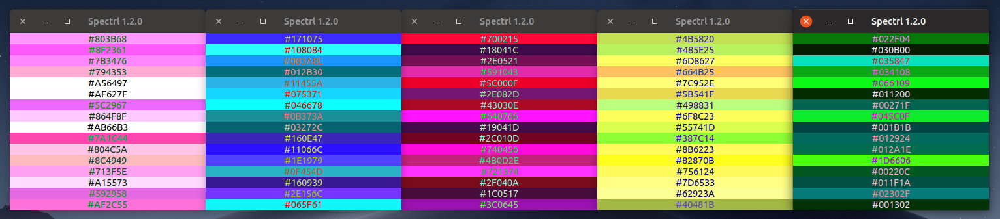
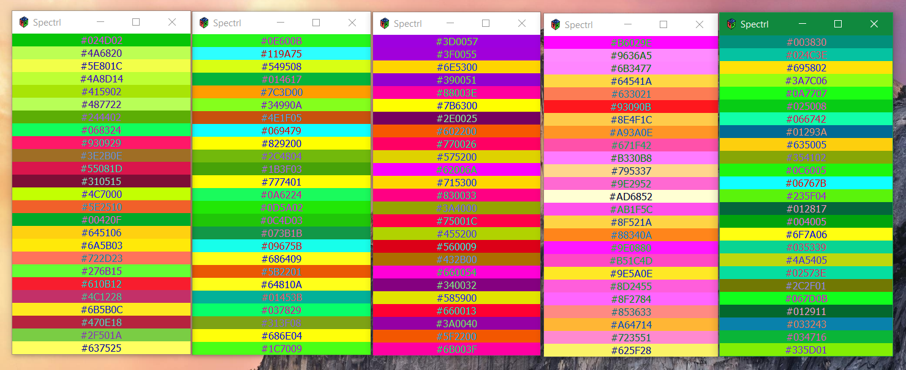
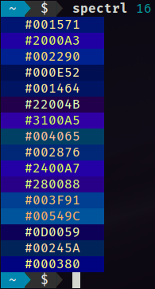

Spectrl
Spectrl is a small utility that lets you choose an amount of randomised colours that fit well together.

Spectrl running on Ubuntu 19.04. It also runs on Windows:


Spectrl also runs in the terminal, of course!
Spectrl was created using Rust, and uses gtk-rs to display its non-terminal user interface.
You can find manual compilation instructions
here on GitHub, where the source code is also located.